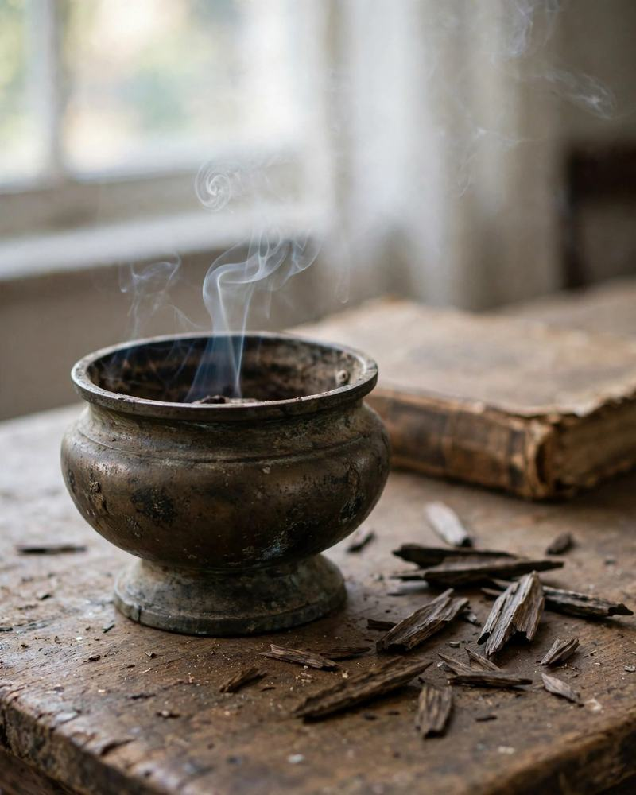

51 · 进阶 | 阅读 6 分钟
沉香为什么这么贵？
依据：LY/T 3223-2020《沉香质量分级》、CITES 公约附录 II
作者：Jack Qian（种植园团队，2002 年起种沉香）
一 句 话 结 论
沉香贵在三个地方：结香要几年到几十年，时间成本高；一棵树能结的香很少，产量低；野生资源稀少又受 CITES 附录 II 管制，合规的料越来越少。但贵不等于每一件都值，价格还要看油脂、产区、稀缺性和工艺。

沉香原材。场景示意。
沉香为什么这么贵？这个问题要从供给说起：沉香的贵，是时间、产量和稀缺性三件事叠加的结果。但贵不等于每一件都值钱，价格的另一半是市场和名气。
时间成本：结香要几年到几十年
树受伤到结香，要几年到几十年（文章 38）。时间是最贵的部分：种一棵树，等它受伤、结香、成材，是一辈子的事。
种植园的日常就是等待：种下去，造伤，等几年，取香，再等下一批。快不了，也急不得。
产量低：一棵树结不了多少香
一棵树只有受伤部位结香，能取的料很少；好料更少。结香多的部位，往往只有树干的一小部分。
取香之后还要处理：去白木、修整、分级。真正能卖的成品，比原料更少。
稀缺性：野生资源少，又受管制
沉香属列入 CITES 附录 II，进出口要许可。野生料越来越少，合规成本越来越高。
人工种植是主流，但人工料同样要等几年才能结香。供给上不去，价格就下不来。
价格的另一半：名气和市场
热门产区名气大，价格里有名气溢价。市场热度也会推高价格：追捧的人多，价格就涨。
名气溢价和香韵本身没有关系。买之前先分清：你为香韵付钱，还是为名气付钱？
贵不等于每件都值
价格看油脂、产区、稀缺性、工艺四个因素（文章 36）。四个因素一起定价，缺一不可。
买之前先学会分辨真假（文章 01-10）。贵的东西造假更多，不懂行就买贵料，等于给别人送钱。
自查清单
1
沉香贵在三点：时间长、产量低、野生稀少又受管制。
3
价格里有名气溢价，分清为香韵付钱还是为名气付钱。
收 藏 卡 · 截 图 保 存
记住这几点
- · 沉香贵的三个原因：时间长、产量低、野生稀少受管制
- · 价格里有名气溢价，和香韵本身无关
- · 贵不等于每件都值，买前先学分辨真假
来源：LY/T 3223-2020《沉香质量分级》、CITES 公约附录 II。
边界说明：本文讲的是初筛方法，不是最终鉴定结论。最终结论以具备 CMA 资质的机构检测报告为准。